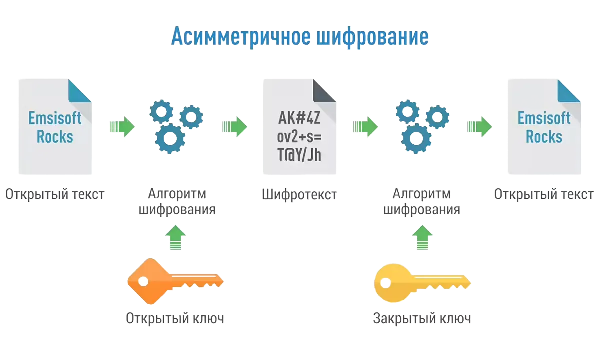
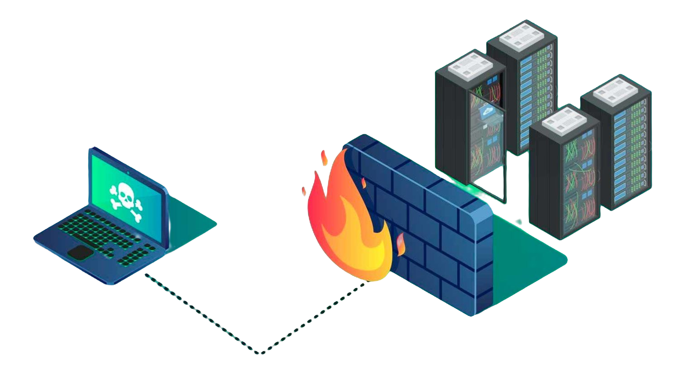

Безопасность компьютерных сетей
Шифрование
Шифрование - это процесс преобразования информации в код, чтобы предотвратить несанкционированный доступ. Это основной метод защиты данных в сети.
Файрволы
Файрволы контролируют входящий и исходящий сетевой трафик и могут предотвратить доступ к сети от неавторизованных источников.
Антивирусное программное обеспечение
Антивирусные программы защищают компьютеры и сети от вредоносного программного обеспечения, такого как вирусы, трояны и шпионское ПО.
Интрузивное обнаружение и предотвращение
Системы обнаружения и предотвращения вторжений (IDS/IPS) активно мониторят сеть на предмет подозрительной активности и могут блокировать потенциально вредоносный трафик.
Управление доступом
Управление доступом - это критически важный аспект безопасности сети, который обеспечивает, что только авторизованные пользователи имеют доступ к определённым данным и ресурсам. Это достигается через ряд политик и процедур.
- Аутентификация: Процесс проверки личности пользователя, обычно с использованием пароля, биометрии или электронных ключей.
- Авторизация: Определяет уровень доступа, который предоставляется аутентифицированному пользователю.
- Учётные записи: Идентификаторы пользователей, которые отслеживают и контролируют их действия в сети.
- Многофакторная аутентификация (MFA): Использует несколько методов аутентификации для увеличения уровня безопасности.
Эти механизмы помогают предотвратить несанкционированный доступ и защитить ценные данные от угроз, таких как фишинг, взлом и другие виды кибератак.